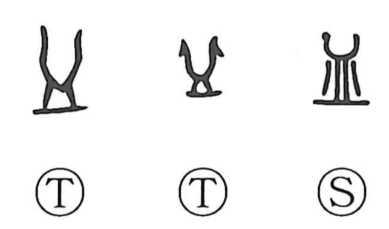

皿

Kun: sara | On: bei
dish ・ plate
Explanation
A pictograph of a shallow, flat dish. In ancient forms it is simply the open, rimmed vessel. When the element for “blood” is set upon this dish, it gives the character for blood (ketsu). The image of liquid heaped up and spilling from a dish became the prototype of the character read itsu, “to overflow.” Placing water in the dish so that it reflects one’s face evokes the “water mirror,” expressed in a character read kan, and related forms such as the washbasin (tarai). From wine-cup to mirror to tub, a whole family of containers associated with water is signaled by this same dish shape.